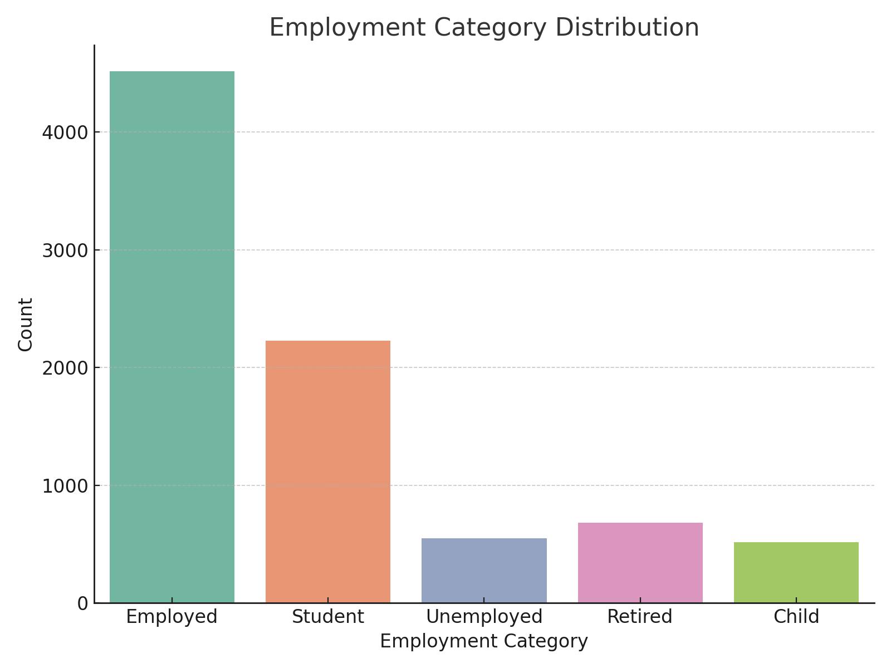

This project presents a comprehensive analysis of a fictional UK town using synthetically generated census data. Modelled after the 1881 UK census, the dataset was created using Python’s Faker library and consists of 8,485 individual records. The goal is to emulate how census data can be used to guide public policy, investment, and social planning decisions through data cleaning, statistical analysis, and visual storytelling.
Data cleaning addressed missing values, format inconsistencies, and incorrect inputs. Key steps included:
The town is dominated by a middle-aged population (20–60 years), with females slightly outnumbering males. This indicates a potential ageing population crisis in the future, particularly in health and social care.

Employment levels are strong, with most residents categorised as employed or students. A derived employment category field helped segment the population into employed, unemployed, students, children, and retirees. Most economically active individuals are aged 20–60.
Roughly 33% of residents have no religion. Christianity remains the most declared religion (~23%). Other affiliations, such as Islam, Sikhism, or Jediism, were minimal and normalised in the data.

Marriage, divorce, and widowhood span across all age groups, with a larger number of widowed individuals in older age bands. There are more divorced females than males, likely indicating gendered social trends.

Around 43% of residents are estimated to commute out of the town regularly—mostly university students and working professionals. Estimated immigration and emigration rates (46.69 and 21.9 per 1,000 respectively) suggest a modest population growth of 19.2 per 1,000 households.
Analysis of occupancy across 2,819 households showed several homes under-utilised, indicating low demand for new housing development. Instead, improving use of existing housing stock is recommended.

This project demonstrates how synthetic data can simulate real-world census analysis. With proper data cleaning and visualisation, valuable insights were derived to guide urban planning, social infrastructure, and investment decisions.